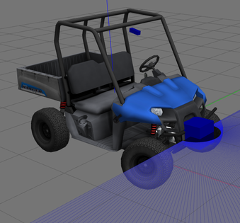

В этой задаче мы будем управлять движением МР в виртуальной среде (Gazebo либо Stage)
В качестве МР выступает модель карта с кинематической схемой автомобиля (Ackerman steering - поворачивающиеся передние колеса)

МР оснащен сканирующим лазерным дальномером и другими датчиками(в Gazebo)
В этой задаче мы не используем данные датчиков, только одометрию и данные о положении робота, которые приходят из симулятора
Управление роботом в этой задаче сводится к управлению поворотом переднего колеса велосипедной модели (топик /steering куда можно отправить желаемый угол поворота руля в рад).
Скорость движения по траектории задается отдельным сообщением (топик /velocity куда можно отправить желаемую скорость в м/сек).
В случае Gazebo за передачу команд управления в модель отвечает vehicle_ros_plugin, а в случае stage команды превращает в управление моделью stage_controller. И в том и в другом случае моделируются ограничения на параметр управления и скорость его изменения (линейное ускорение и скорость вращения рулевого колеса соответственно). То есть если задать угол поворота руля, то он начнет менятся от текущего к заданному с фиксированной скоростью (задается в лонч файле для модели stage ).
Модуль simple_controller, который нужно доработать, реализует управление вдоль заданной траектории.
Запуск модуля управления с моделью осуществляется с помощью лонч файла controller_stage.launch для stage
roslaunch simple_controller controller_stage.launch
controller.launch для Gazebo)
roslaunch simple_controller controller.launch
в этом лонче прописан запуск модели с нужными для работы модулями, запуск модуля simple_controller и запуск панели rqt с нужными плагинами, среди которых: задание скорости движения через message_publisher, графики ошибок управления, контролы для настройки регулятора (в текущей реализации).
simple_controller управляет движением МР по заданной траектории за счет управления поворотом рулевого колеса (топик /steering). Скорость движения задается извне, в данном случае из rqt (с помощью плагина publish message)
simple_controller реализован в виде класса Controller, часть функций которого является колбеками, вызываемыми библиотекой ros при получении сообщений.
В частности он подписан на сообщения
Модуль публикует:
В этой задаче траектория движения задается локально в виде набора сегментов с постоянной кривизной: прямых и дуг окружностей.
В классах сегментах реализованы следующие функции:
Траектория задается как массив(std::list) trajectory из нескольких сегментов в конструкторе контроллера.
Модуль управления движением вдоль траектории реализован в виде ПИД регулятора, входом которого (ошибкой) является расстояние до ближайшей точки траектории, а выходом желаемый угол управления
Начальное положение МР соответствует начальной точке первого сегмента.
Далее в таймере контроллера
-update_robot_pose - обновляется положение МР с учетом полученных данных (последнее положение + скорость * dt)
/stering (здесь небольшое несоответствие, но на самом деле речь просто о коэффициенте - он переходит в коэффициенты регулятора)Переделать модуль управления движением вдоль траектории, реализовав один из алгоритмов, описанных на лекции (базовый вариант - pure pursuite алгоритм преследования маяка). Изменения должны коснуться в основном только функции таймера. Управление должно быть устойчивым на скоростях до 10 м/сек.